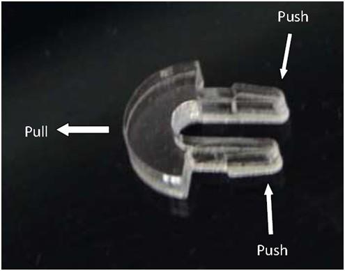

Rainbow Cube Kit Acrylic Harness is an exquisite, Transparent and easy-to-assembled acrylic case which custom made for Rainbow Cube Kit, it is designed by Riley Porter @Synthetos. This Harness is made of six piece of acrylic board, two bags of keys, four 16mm high plastic column and several screw nuts.

Pay Attention: when disassemble the box, please pay attention and follow the disassembling note:
The keys are not strong enough to withstand hard stretching. To disassemble the box, you should use your left hand to push the two legs and at the same time use your right hand to pull the key out. This is illustrated in the image below:

Copyright (c) 2008-2016 Seeed Development Limited (www.seeedstudio.com / www.seeed.cc)